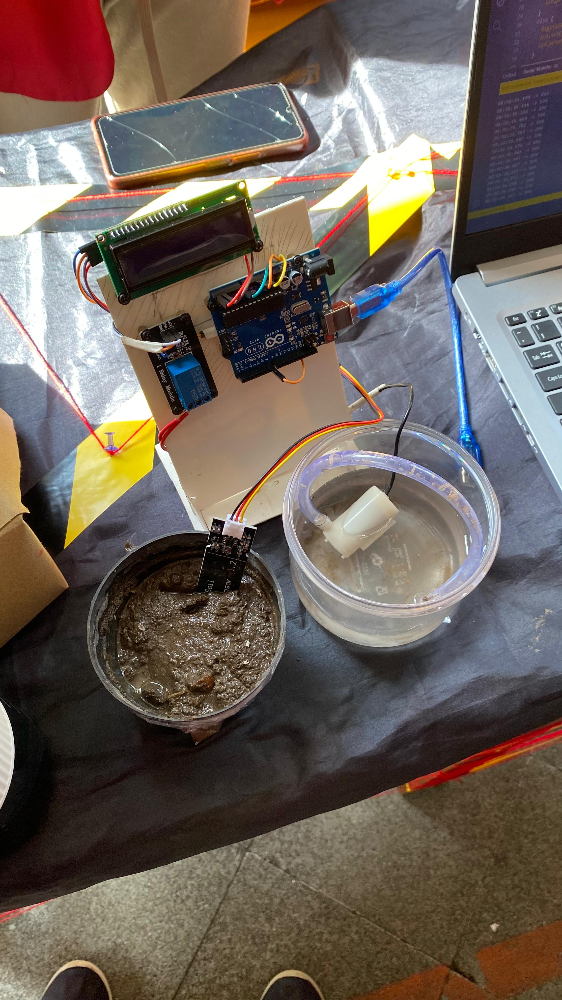
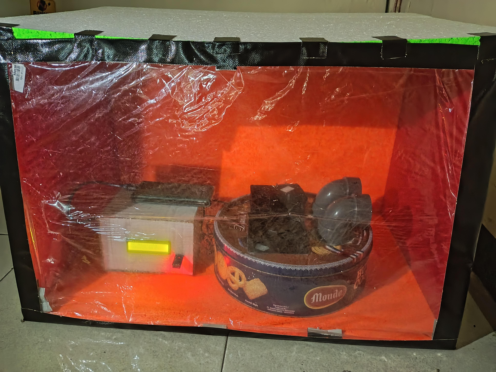
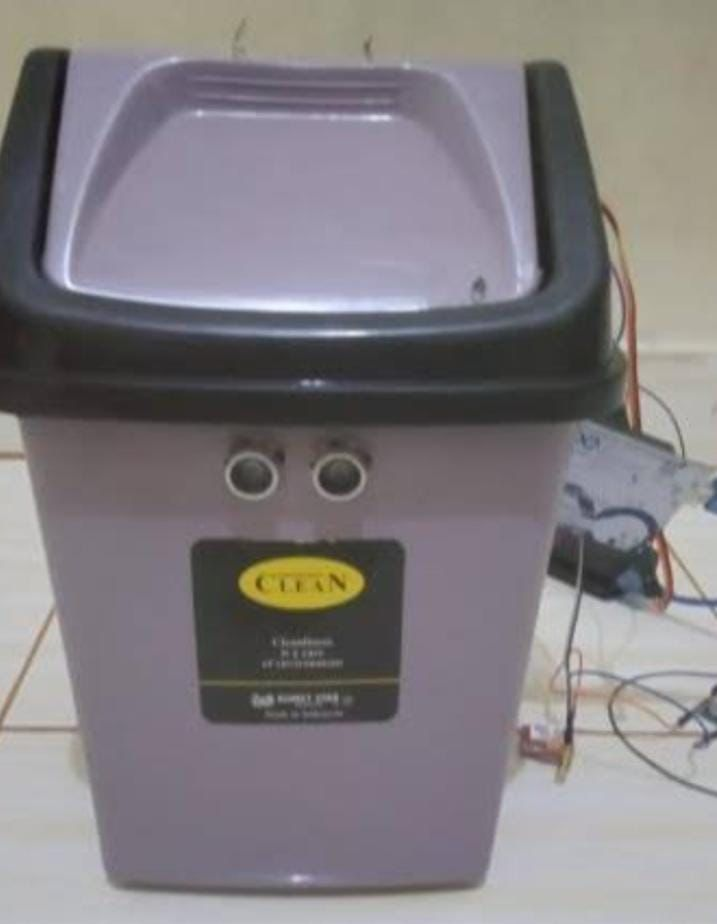
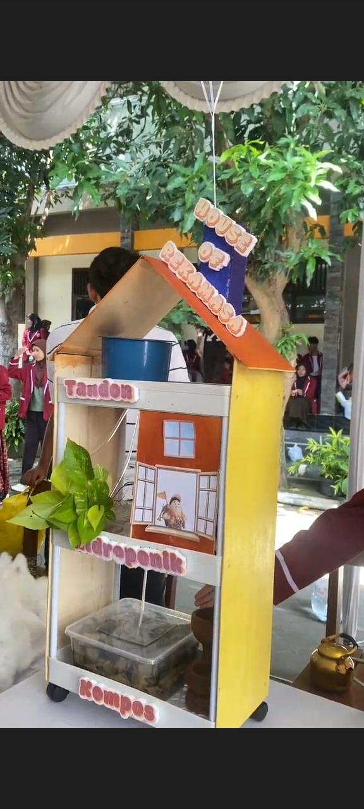

Galeri & Produk
PENAKE (Penyiram Tanaman berbasis Kelembapan)
Karya: Kelas XI Kartini 4 – Kelompok 1
Fitur Utama:
- Sensor Kelembapan Akurat
- Menggunakan Tenaga Baterai
- Efisiensi Energi
- Penggunaan Air yang Efisien
Manfaat Produk:
- Menghemat Waktu
- Hemat Air
- Aman Ditinggal Pergi
- Praktis dan Mudah Digunakan
AC Adiwiyata (Alat Cerdas Penyejuk Ramah Lingkungan)
Karya: Kelas XI Kartini 6 – Kelompok 1
Fitur Utama:
- Menggunakan Bahan Bekas
- Hemat Energi
- Desain Sederhana dan Portabel
- Tanpa Freon
Manfaat Produk:
- Menurunkan Suhu Ruangan Secara Alami
- Mendukung Gerakan Ramah Lingkungan
- Murah dan Efisien
- Meningkatkan Kesadaran Teknologi Hijau
Tong Sampah Otomatis
Karya: Kelas XI Kartini 6 – Kelompok 2
Fitur Utama:
- Sensor Gerak Otomatis
- Ramah Lingkungan
- Mudah Digunakan
- Ditenagai oleh Baterai
Manfaat Produk:
- Menjaga Kebersihan dan Higienitas
- Efisien dan Modern
- Meningkatkan Kesadaran Lingkungan
- Cocok untuk Sekolah, Rumah, dan Kantor
Otomatisasi Akuaponik Sistem Terintegrasi
Karya: Kelas XI Kartini 1 – Kelompok 1
Fitur Utama:
- Sistem Sirkulasi Air Otomatis
- Penyaringan Air Terintegrasi
- Lampu LED Tanaman Otomatis
- Hemat Lahan dan Ramah Lingkungan
Manfaat Produk:
- Produksi Pangan Mandiri
- Efisien dan Praktis
- Edukasi dan Inovasi
- Ramah Lingkungan
Alat Setor Botol (Setol)
Karya: Kelas XI Kartini 2 – Kelompok 1

Fitur Utama:
- Sensor pendeteksi sampah
- Penghitungan sampah otomatis
- Penukaran otomatis dengan permen
- Desain unik dan menarik
Manfaat Produk:
- Mengurangi sampah botol plastik
- Meningkatkan kesadaran masyarakat
- Menarik minat masyarakat untuk memilah sampah botol plastik